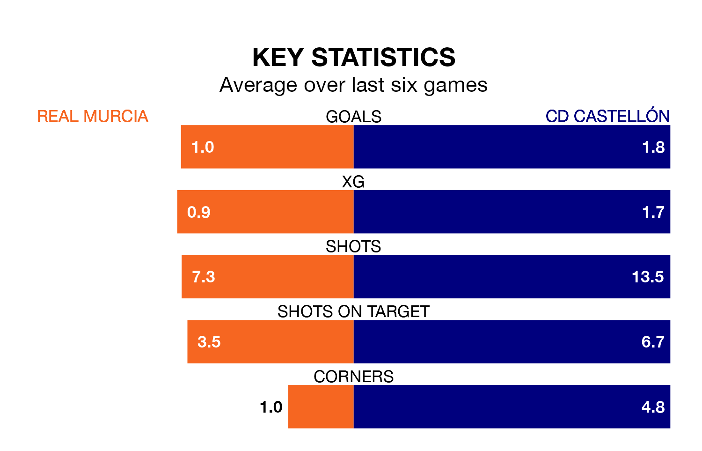

CD Castellón face a challenge to maintain their high-scoring form away against a tight Real Murcia defence on Saturday.
With 68 goals in 34 games, Castellón are the top scorers in Primera Division RFEF Group 2 ahead of the 3pm kick-off at the Estadio Nueva Condomina.
They face a Murcia side who have scored 32 in 34 matches, but conceded only 31 goals, putting them joint-third among the league's tightest defences – only Córdoba and Málaga CF have conceded fewer goals.
Castellón are top of the table after 34 games, of which they have won 24 and drawn three, earning 75 points.
Murcia are five places behind the visitors in sixth, with 15 wins and nine draws putting them on 54 points.
In Jesús De Miguel Alameda, Castellón have the league's most on-form striker so far this season. He has notched 15 goals in 23 appearances.
The home side's top scorers, with five goals each, are José Ángel Carrillo Casamayor and Rodrigo Ríos Lozano.
Murcia are in fantastic form in Primera Division RFEF Group 2, with five wins and a draw from their last six games.
With five wins and one loss over that period, Castellón's form is slightly worse – they have taken 15 points from 18, compared to Murcia's 16.
In the last five years, Murcia and Castellón have played each other on four occasions. Murcia won one of them, Castellón two, and they drew once.
On average, Murcia scored 1.2 goals and Castellón 1.0 in those matches.
Their last meeting was on December 17, when Castellón won 2-1 at home.
Murcia's last match was on Sunday, a 1-0 win against Ceuta, with Marc Baró Ortiz getting the goal for Murcia.
Castellón beat UD Melilla 1-0 last time out, also on Sunday, with Óscar Gil Osés on the scoresheet.
Updated: 10:44 (UTC), 30/04/24